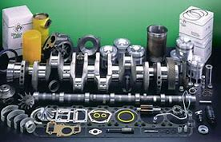
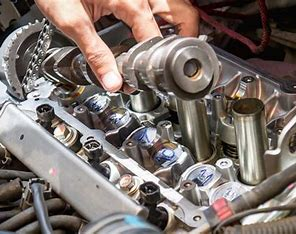
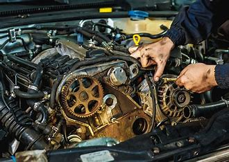

SERVICIO AUTOMOTRIZ TORO MOTOR GARAGE
SERVICIOS
- Overhaul



-
El overhaul es un mantenimiento exhaustivo del motor que implica desmontar todos sus componentes para probar
su funcionamiento y reemplazar las partes que lo necesiten. En algunos casos, esta labor se solventa con la
limpieza de las parte y el posterior montaje del motor. El objetivo del mantenimiento overhaul es mejorar el
rendimiento del automóvil y prolongar la vida del motor, o de otras piezas del coche. Existen dos tipos de
mantenimiento overhaul:
- El overhaul general se realiza sobre las partes internas de la cabeza del motor (culata o tapa de
cilindros), las válvulas, los sellos y los inyectores. No suele ser necesario quitar el motor del
vehículo para hacer este tipo de mantenimiento.
- El overhaul especial se realiza sobre todas las partes del motor, por lo tanto, es necesario montar
el motor completo y volver a ensamblarlo.
¿Cómo diagnosticar que un vehículo necesita overhaul?El primer indicador de problemas de motor es cuando el
vehículo está expulsando humo de color gris azulado o se se perciben pérdidas de potencia en el motor. Para
poder determinar si es realmente el motor es el que está dañado, se recomienda hacer tres pruebas:
- Prueba en seco de compresiones. Consiste en instalar en cada uno de los cilindros un manómetro para
comprobar la presión que está ejerciendo el pistón en el cilindro y si existen fugas.
- Prueba húmeda. Completa la prueba en seco de compresiones para diagnosticar una pérdida de fuerza de
motor o quema de aceite. Para realizar esta prueba se añaden 30 ml de aceite de motor al cilindro,
dejándolo reposar durante 5 minutos y se vuelve a realizar la medición de compresiones con el
manómetro. Si el resultado es un aumento de las compresiones, hay problema de desgaste.
- Prueba de fuga de compresiones. Sirve para comprobar donde se producen las fugas. Para su
realización se retira la tapa del radiador, la varilla de medición de aceite y el tapón de la
tapadera de válvulas; se coloca el pistón en el punto muerto superior del cilindro y se aplica una
presión de aire comprimido. A continuación se verificará en qué parte del motor se tiene la fuga de
aire.
Conseguir el objetivo de un coche cero kilómetros requiere minuciosidad en la tarea, pruebas concretas y un
montaje exhaustivo de las piezas revisadas. El mantenimiento overhaul requiere mano de obra cualificada y la
sustitución de las piezas homologadas para garantizar un buen resultado. No es, desde luego, una de las
reparaciones más comunes pero es una opción para recuperar y alargar la vida útil del coche.